Partisanship, Propaganda, and Disinformation: Online Media and the 2016 U.S. Presidential Election
August 16, 2017
Executive Summary
In this study, we analyze both mainstream and social media coverage of the 2016 United States presidential election. We document that the majority of mainstream media coverage was negative for both candidates, but largely followed Donald Trump’s agenda: when reporting on Hillary Clinton, coverage primarily focused on the various scandals related to the Clinton Foundation and emails. When focused on Trump, major substantive issues, primarily immigration, were prominent. Indeed, immigration emerged as a central issue in the campaign and served as a defining issue for the Trump campaign.
We find that the structure and composition of media on the right and left are quite different. The leading media on the right and left are rooted in different traditions and journalistic practices. On the conservative side, more attention was paid to pro-Trump, highly partisan media outlets. On the liberal side, by contrast, the center of gravity was made up largely of long-standing media organizations steeped in the traditions and practices of objective journalism.
Our data supports lines of research on polarization in American politics that focus on the asymmetric patterns between the left and the right, rather than studies that see polarization as a general historical phenomenon, driven by technology or other mechanisms that apply across the partisan divide.
The analysis includes the evaluation and mapping of the media landscape from several perspectives and is based on large-scale data collection of media stories published on the web and shared on Twitter.
Overview of Methods
-
Cross-linking patterns between media sources offer a view of authority and prominence within the media world.
-
The sharing of media sources by users on Twitter and Facebook provides a broader perspective on the role and influence of media sources among people engaged in politics through Twitter and Facebook.
-
The differential media sharing patterns of Trump and Clinton supporters on Twitter enable a detailed analysis of the role of partisanship in the formation and function of media structures.
-
Content analysis using automated tools supports the tracking of topics over time among media sources.
-
Qualitative media analysis of individual case studies enhances our understanding of media function and structure.
Key Takeaways
Donald Trump succeeded in shaping the election agenda. Coverage of Trump overwhelmingly outperformed coverage of Clinton. Clinton’s coverage was focused on scandals, while Trump’s coverage focused on his core issues.
 |
|
Figure 1: Number of sentences by topic and candidate from May 1, 2015, to November 7, 2016 |
|
Attempts by the Clinton campaign to define her campaign on competence, experience, and policy positions were drowned out by coverage of alleged improprieties associated with the Clinton Foundation and emails. Coverage of Trump associated with immigration, jobs, and trade was greater than that on his personal scandals. |
|
Immigration and Muslims/Islam were the two most widely covered substantive issues of the campaign. 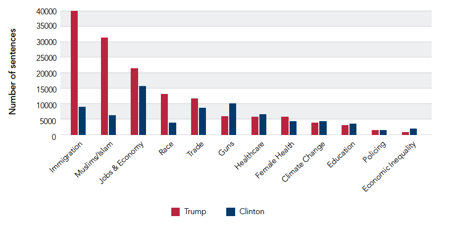 |
|
Figure 2: Number of sentences by substantive topic and candidate from media on the open web Immigration emerged as the leading substantive issue of the campaign. Initially, the Trump campaign used a hard-line anti-immigration stance to distinguish Trump from the field of GOP contenders. Later, immigration was a wedge issue between the left and the right. Pro-Trump media sources supported this with sensationalistic, race-centric coverage of immigration focused on crime, terrorism, fear of Muslims, and disease. While coverage of his candidacy was largely critical, Trump dominated media coverage. |
|
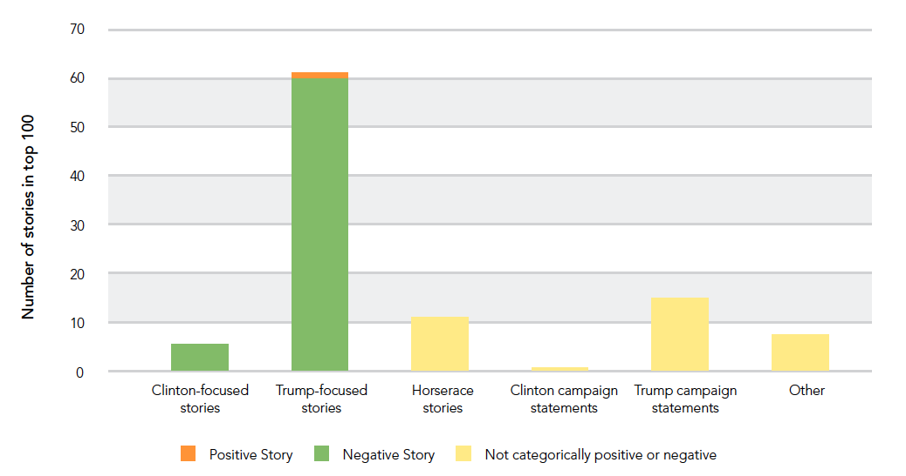 |
|
Figure 3: Valence and focus of the 100 most linked-to stories. Stories were hand-coded for topic and tone. The media landscape is distinctly asymmetric. |
|
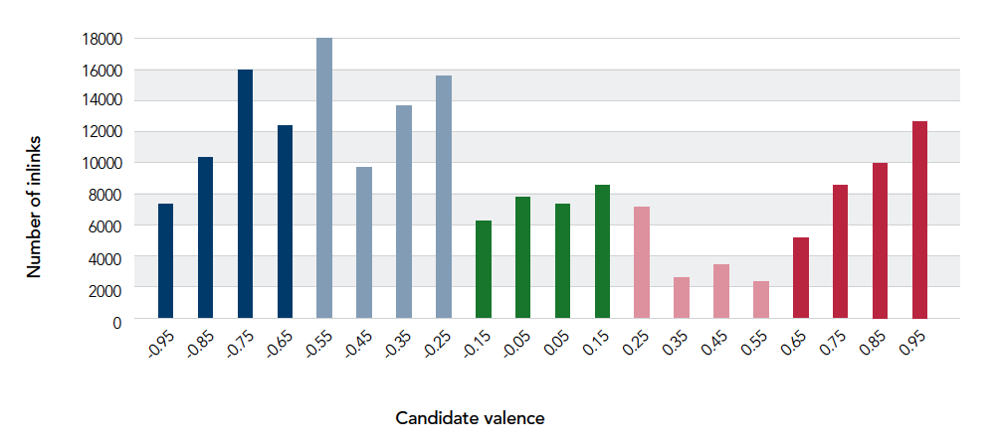 |
|
Figure 4: Partisan distribution of top 250 most-linked-to media sources by total inlinks* *“Inlinks” refers to the incoming cross-media hyperlinks to stories and media sources. Twitter is a more partisan environment than the open web media landscape. 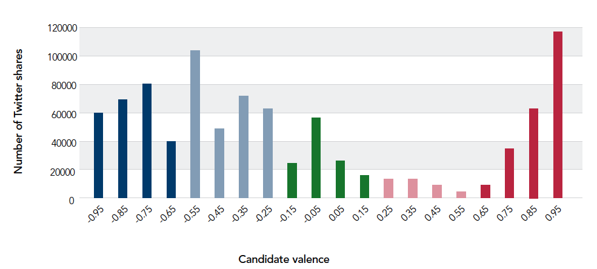 |
|
Figure 5: Partisan distribution of top 250 media sites by Twitter shares Facebook is more partisan than Twitter. 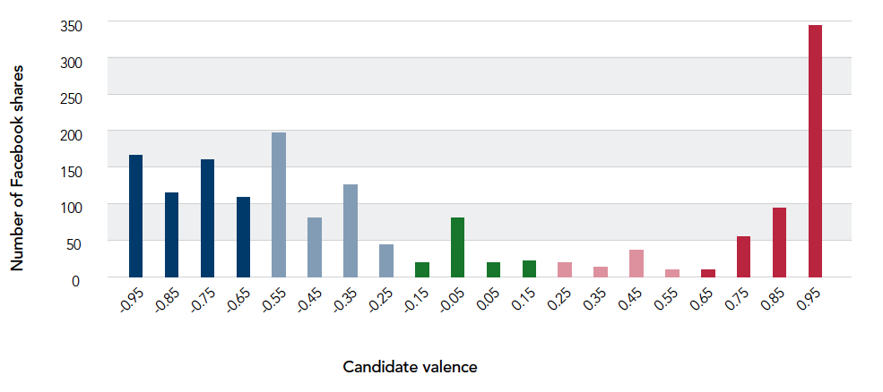 |
|
Figure 6: Partisan distribution of top 250 media sites by Facebook shares From all of these perspectives, conservative media is more partisan and more insular than the left. The center-left and the far right are the principal poles of the media landscape.The center of gravity of the overall landscape is the center-left. Partisan media sources on the left are integrated into this landscape and are of lesser importance than the major media outlets of the center-left. The center of attention and influence for conservative media is on the far right. The center-right is of minor importance and is the least represented portion of the media spectrum. 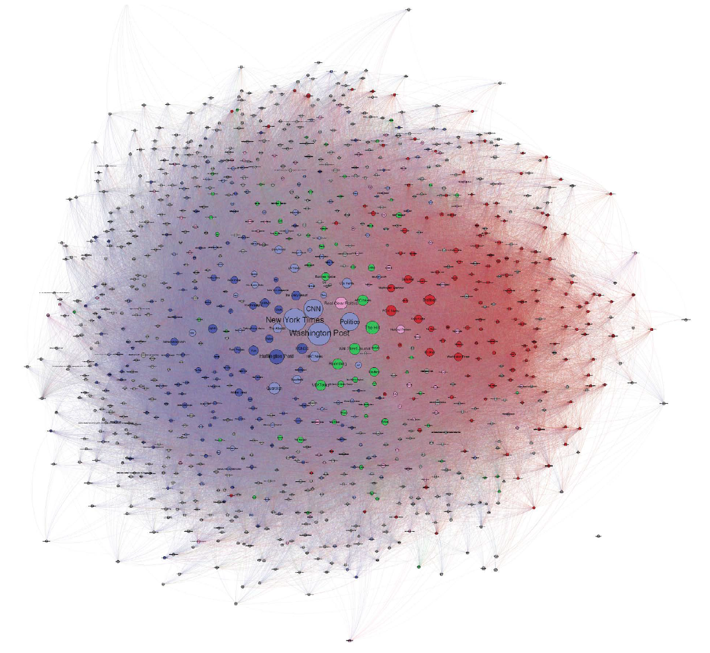 |
|
Figure 7: Network map based on open web media from May 1, 2015, to November 7, 2016 (explore this map in higher resolution) Conservative media disrupted. 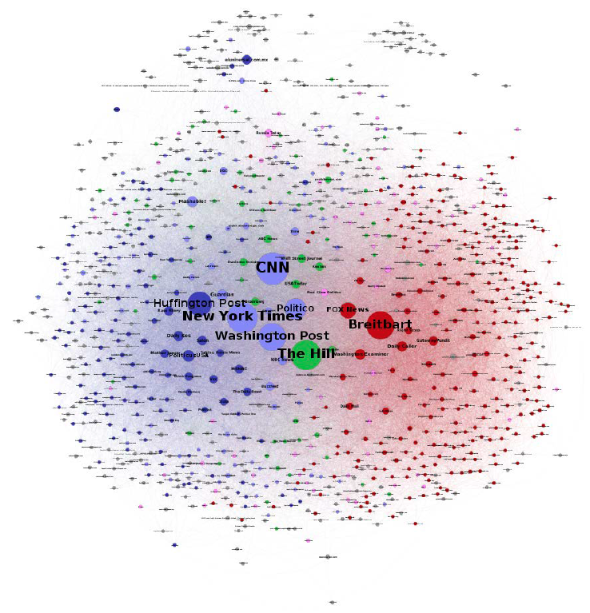 |
|
Figure 8: Network map based on Twitter media sharing from May 1, 2015, to November 7, 2016 with nodes sized by number of Twitter shares (explore this map in higher resolution) 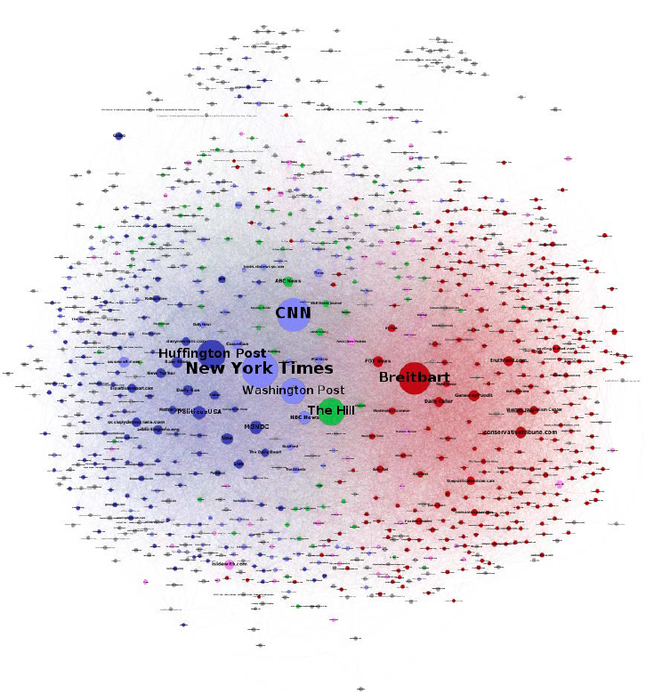 |
|
Figure 9: Network map based on Twitter media sharing from May 1, 2015, to November 7, 2016 with nodes sized by number of Facebook shares (explore this map in higher resolution) On the partisan left and right, the popularity of media sources varies significantly across the different platforms. On the left, the Huffington Post, MSNBC, and Vox are prominent on all platforms. On the right, Breitbart, Fox News, the Daily Caller, and the New York Post are popular across platforms. 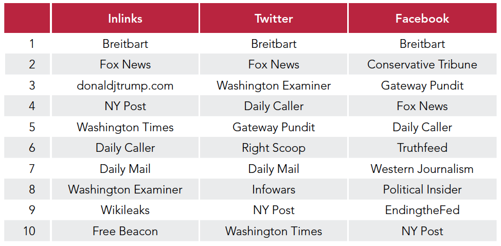 |
|
Table 1: Most popular media on the right from May 1, 2015, to November 7, 2016 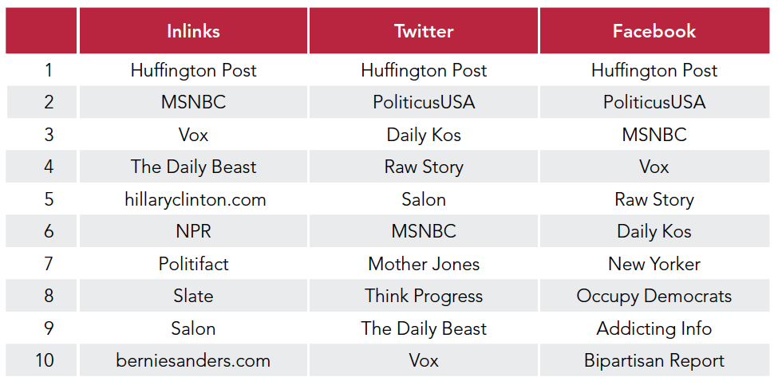 |
|
Table 2: Most popular media on the left from May 1, 2015, to November 7, 2016 On the most widely covered topic of the election, immigration, Breitbart was the most prominent site. On Twitter, it is far above the rest. 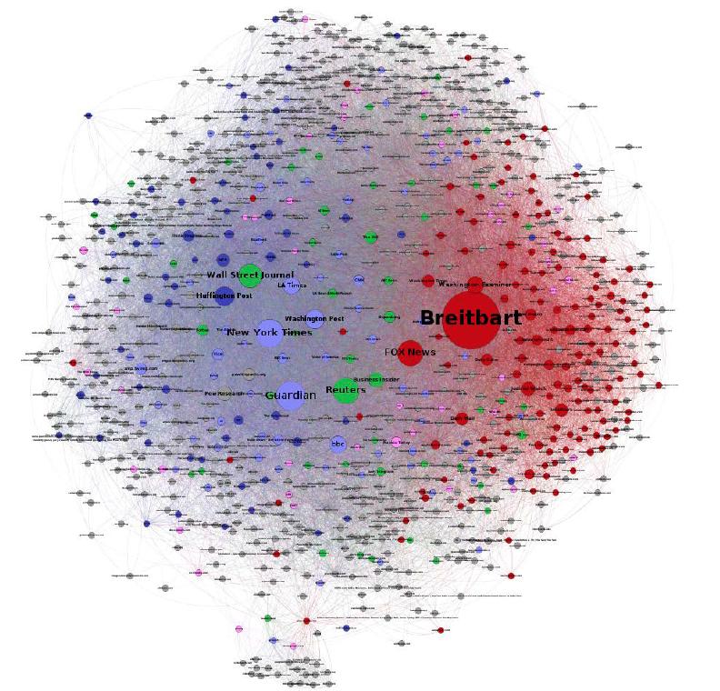 |
|
Figure 10: Network map based on Twitter sharing for the topic of immigration (explore this map in higher resolution) Breitbart’s key role in the media landscape during the election was particularly pronounced in coverage of immigration. On Twitter, Breitbart stories on immigration were shared more than twice as often as stories from the Guardian, which ranked second.
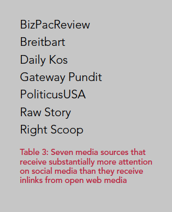 Disinformation and propaganda are rooted in partisanship and are more prevalent on social media. These sites do not necessarily all engage in misleading or false reporting, but they are clearly highly partisan. In this group, Gateway Pundit is in a class of its own, known for “publishing falsehoods and spreading hoaxes.” |
|
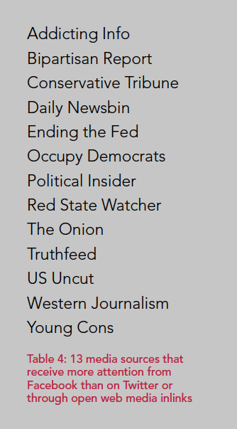 Disproportionate popularity on Facebook is a strong indicator of highly partisan and unreliable media. |
|
Asymmetric vulnerabilities: The right and left were subject to media manipulation in different ways. The more insulated right-wing media ecosystem was susceptible to sustained network propaganda and disinformation, particularly misleading negative claims about Hillary Clinton. Traditional media accountability mechanisms—for example, fact-checking sites, media watchdog groups, and cross-media criticism—appear to have wielded little influence on the insular conservative media sphere. Claims aimed for “internal” consumption within the right-wing media ecosystem were more extreme, less internally coherent, and appealed more to the “paranoid style” of American politics than claims intended to affect mainstream media reporting. The institutional commitment to impartiality of media sources at the core of attention on the left meant that hyperpartisan, unreliable sources on the left did not receive the same amplification that equivalent sites on the right did. These same standard journalistic practices were successfully manipulated by media and activists on the right to inject anti-Clinton narratives into the mainstream media narrative. A key example is the use of the leaked Democratic National Committee’s emails and her campaign chairman John Podesta’s emails, released through Wikileaks, and the sustained series of stories written around email-based accusations of influence peddling. Another example is the book and movie release of Clinton Cash together with the sustained campaign that followed, making the Clinton Foundation the major post-convention story. By developing plausible narratives and documentation susceptible to negative coverage, parallel to the more paranoid narrative lines intended for internal consumption within the right-wing media ecosystem, and by “working the refs,” demanding mainstream coverage of anti-Clinton stories, right-wing media played a key role in setting the agenda of mainstream, center-left media. We document these dynamics in the Clinton Foundation case study section of this report. |
Related press coverage:
Down the Breitbart Hole (New York Times)
Study: Breitbart-led right-wing media ecosystem altered broader media agenda (Columbia Journalism Review)
Researchers Examine Breitbart's Influence On Election Information (NPR)
The great divide: The media war over Trump (CBS)